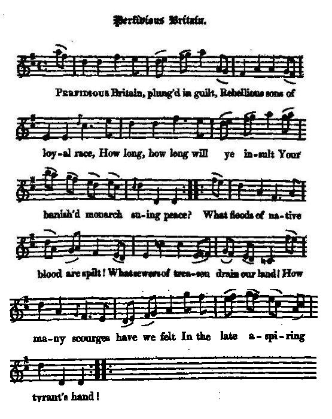

Perfidious Britain
Perfide Britannia
Author unknown (c. 1702)
Tune - Mélodie"Perfidious Britain"
from "The True Loyalist" , page 137, 1779 (text only: titled "A Poem")
and Hogg's "Jacobite Reliques" , part I, N° 63, 1819 (text AND tune, whose origin is not mentioned)
Sequenced by Christian Souchon


|
PERFIDIOUS BRITAIN [1]
1. Pe_rfidious Britain, plu_ng'd i_n guilt, Re_bellious sons o_f loyal race, How long, how long will y_e i_nsult You_r ba_ni_sh'd mo_na_rch suing peace ? Wha_t floods of native bloo_d a_re spilt! Wha_t sewers of treaso_n drai_n ou_r land! Ho_w many scourges ha_ve we_ felt In the la_te a_spi_ri_ng tyrant's hand! 2. An age is past, the age is come, When we from bondage must be freed; Hundreds have met an unjust doom, And right or slav'ry must succeed. Ye powers omnipotent, declare Your justice—guard the British throne— , Protect the good, the righteous heir; And to no stranger give the crown. 3. The heavens their vengeance now begin ; The thunder's dart shall havock bring: Repent, repent that hell-born sin ! Call home, call home your injur'd king! His great progenitors have sway'd Your sceptre nigh the half of time, And his lov'd race will be obey'd, Till time its latest ages claim. 4. O think, ye daring Scots, what right This long succession does entail; Think how your gallant fathers fought, That Fergus' line [2] might never fail. Let England's worthies blush to own, How they their only prince withstood Who now remains to grace the throne Of their Edwards' and their Henrys' blood. 5. But glorious James, of royal stem, Your God's vicegerent and your king, Your peace, your all combin'd in him, Haste, Britons, home your monarch bring; James, Heaven's darling and its care, The brightest youth of mortal frame, For virtue, beauty, form, and air: Call home your rightful king, for shame ! Source: Jacobite Minstrelsy, published in Glasgow by R. Griffin & Cie and Robert Malcolm, printer in 1828. |
A POEM
1. Perfidious Britons, plung'd in guilt, Rebellious sons of royal race, How long, how long will you insult Your banish'd monarch, - shew for grace: What floods of native blood are spilt! What heaps of treasure drain the land! How many scourges have ye felt From the late usurping tyrant's hand! 2. An age is past, the age to come, In which your bondage stands decreed; Millions of millions fix your doom, Till poverty and shame succeed. Contending pow'rs, the gods begin To hurl their dismal threat'nings down, Should you set by the righteous heir; And on a stranger place the crown. 3. The heav'ns their vengeance do begin ; With thunder dart, and havock bring: Repent, repent the hell-born sin __ Call home, call home your injur'd K[in]g! His great progenitors have sway'd Your sceptre ne'r the half of time, And his lov'd race shall be obey'd, Till time its latest sages claim. 4. O think! thou daring Scots! This long succession doth entail; Think how thy gallant fathers fought, That Fergus' line might never fail. Let England's worthies blush to own, How they the only P[rin]ce withstood That now remains to grace the th[ro]ne Of your Edward's and your Harry's' blood. 5. You glorious J[ame]s, of royal stem, Your gods vicegerent and your K[in]g, Your peace, your all combin'd in him, Haste, Britons! home your monarch bring, Young J[ame]s, Heav'n's darling and its care, The brightest youth the gods e'er made, For virtue, beauty, shape, and air: For shame, for shame! call home the K[in]g! Source:"The True Loyalist; or, Chevalier's Favourite: being a collection of elegant songs, never before printed. Also several other loyal compositions, wrote by eminent hands." Printed in the year 1779. |
PERFIDE BRITANNIA [1]
1. Perfide Britannia, toi qui te plonges Dans l'erreur et renies ta loyauté, Jusques à quand faut-il que se prolonge L'exil d'un monarque qui sollicite la paix? Vois comme le sang de tes enfants s'écoule Dans les fossés creusés par tant de trahison; Les coups de fouet qui s'abattent sur nos foules Et dont les derniers tyrans usaient à profusion. 2. Sur le livre du temps une page glisse, Notre servitude devra cesser, Par centaines en butte à l'injustice. Du droit ou de l'esclavage l'un doit triompher. Que ceux qui détiennent le pouvoir l'affirment: Pour garantir un trône, il n'est que l'équité Qu'ils protègent donc l'héritier légitime, Et refusent la couronne aux princes étrangers. 3. Voici que le Ciel assouvit sa vengeance; Les traits de la foudre sèment l'effroi. Votre forfait réclame pénitence. Rappelez, rappelez de son exil votre roi. Ses ancêtres fameux ont tenu le sceptre. La moitié du temps qu'existe la nation Et sa descendance vaut qu'on la respecte. Jusqu'à la fin des temps et des générations. 4. Pensez, Ecossais, combien de droits implique Une aussi vénérable succession. Ils ont voulu, vos pères héroïques, Que la lignée de Fergus ne parte à l'abandon.[2] La rougeur au front, que l'Anglais reconnaisse Qu'il s'opposait au seul prince qu'il eût ici. Car pour occuper le trône nul ne reste Qui soit issu de ses Edouard ou de ses Henri? 5. Mais le glorieux Jacques est de souche royale, Il est vicaire de Dieu. Il est roi. C'est votre paix, votre bien qu'il incarne. Que votre monarque puisse vivre sous son toit! Jacques enfant chéri du Ciel qui le protège Le plus beau jeune homme dans un corps mortel Où courage et charme furent pris au piège. Le roi dans son indigne exil attend votre appel! (Trad. Christian Souchon(c)2009) |
|
[1] This is a vigorous appeal to the loyalty of the nation in behalf of the exiled Prince, and the allusions, the sentiments, and the style would betoken it a composition of Queen Anne's reign, with characteristic naiveté. About this song which he had from Sir Walter Scott, the Ettrick Shepherd says:
" I do not always understand what the bard means; but as he seems to have been an ingenious though passionate writer, I take it for granted that he knew perfectly well himself what he would have been at, so I have not altered a word from the manuscript, which is in the handwriting od an amanuensis of Mr Scott's, the most incorrect transcriber, perhaps, that ever tried the business". This remark provides deep insight into Hogg's collecting and editing "methods"! [2] Fergus : see The Broad Swords of Scotland |
[1] Voici un vibrant appel à la loyauté de la nation envers le Prince exilé. Les allusions qu'il renferme, les sentiments qu'il exprime et le style dans lequel il est rédigé reflètent l'époque de la reine Anne avec sa naïveté bien caractéristique. A propos de ce morceau qu'il tenait de Walter Scott, le "Berger d'Ettrick" écrit:
"Je ne comprends pas toujours ce que le poète veut dire. Mais il me semble qu'il était intelligent et passionné et qu'en conséquence il savait parfaitement de quoi il retournait. Je n'ai donc pas changé un mot du manuscrit lequel est de la main d'un des secrétaires de M. Scott, sans doute le plus mauvais transcripteur qu'il ait attelé à cette tâche". (Cela en dit long sur les "méthodes" éditoriales et de collecte employées par Hogg;) [2] Fergus :Cf. La Large épée d'Ecosse |
|
|
|